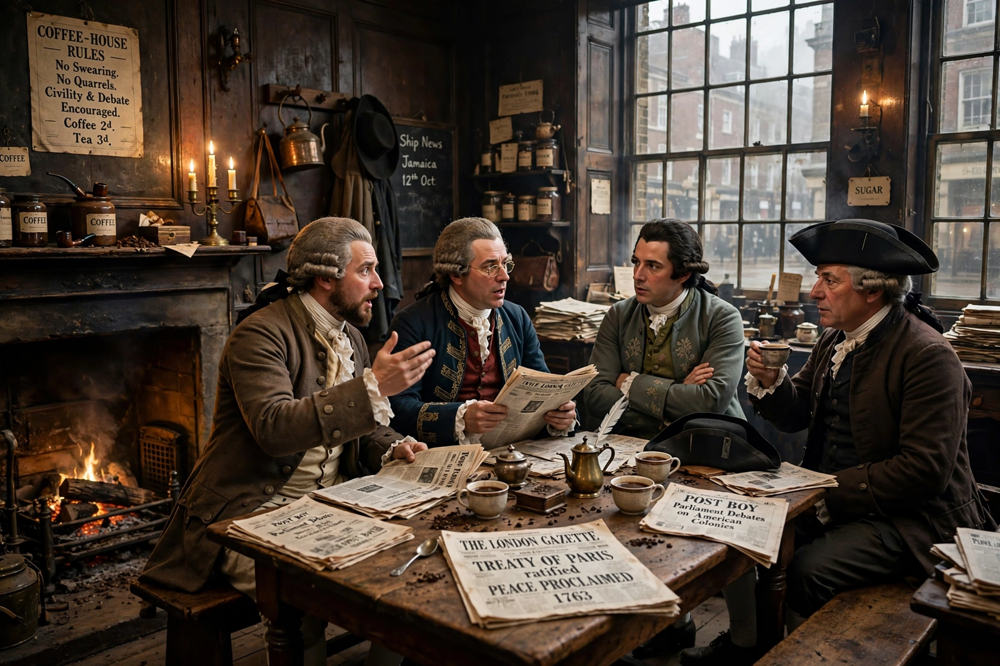

The public sphere (German: Öffentlichkeit) is an area of social life where individuals can come together to freely discuss and identify societal problems, and through that discussion influence political action. The concept entered modern social theory chiefly through Jürgen Habermas's The Structural Transformation of the Public Sphere (1962), which traced the emergence of a "bourgeois public sphere" in 17th- and 18th-century Europe — in coffeehouses, salons, and the press — where private persons assembled as a public, debating on the basis of reason and bracketing differences of status.
For Habermas, the public sphere mediates between civil society and the state: a realm of public opinion, distinct from both the market and government, in which rational-critical debate could form a check on authority. He argued that this sphere later declined as mass media, advertising, and organized interests turned citizens into passive consumers — a "refeudalization" of public life. In his later discourse theory, the public sphere became central to deliberative democracy.
Feminist and social historians, notably Nancy Fraser, criticized the idealization of the bourgeois sphere for its exclusions of women, workers, and minorities, and proposed instead multiple "subaltern counterpublics." Historians have also pointed to plebeian and religious public spheres predating or paralleling the bourgeois model. Contemporary debate asks whether the internet and social media revive the public sphere or fragment it into polarized enclaves — a question central to media studies and democratic theory.